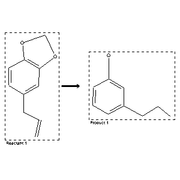

|  |
| FA | RX(1); FLST(1); RX(1) |
Reaction (1 of 1)
| Reaction ID | 5732276 |
| Reactant BRN | 136380 |
| Reactant | nickel; 5-allyl-benzo[1,3]dioxole |
| Product BRN | 1929705 |
| Product | dihydrosafrole; 3-Propyl-phenol |
| No. of Reaction Details | 1 |
Reaction Details (1 of 1)
| Reaction Classification | Chemical behaviour |
| Temperature | 200 |
| Other Conditions | Hydrogenation |
| Comment | Handbook |
| Citation Pointer | 500344; Journal; Henrard; CHZEA6; Chem.Zentralbl.; GE; 78; II; 1907; 1512; |
Reference (1 of 1)
| Citation Number | 500344 |
| Document Type | Journal |
| Authors | Henrard |
| CODEN | CHZEA6 |
| Journal Title | Chem.Zentralbl. |
| Language Code | GE |
| (Series) Volume | 78 |
| Number | II |
| Publication Year | 1907 |
| Page | 1512 |